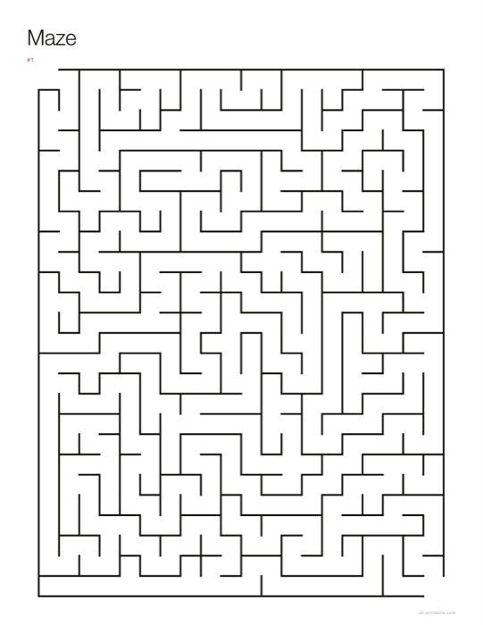

Mazes generated fresh at any size from four squares across to sixty, with the solution path as the answer key. A small grid suits a toddler; a large one with loops will hold up an adult.
Open the maker Free · no sign-up · nothing uploaded

| Grid | Up to 60×80 |
|---|---|
| Loops | Adjustable |
| Solution | Yes |
Choose Print, then pick Save as PDF as the destination if you want a file. Set scale to 100% and margins to None — the sheet already carries its exact paper size, so the browser must not rescale it. Anything else and the dimensions you chose are no longer the dimensions on the page.
Dead ends are what let you rule a branch out. Remove them and there are more ways to go wrong.
Set up and ready to print, included with Pro. Everything else on this page is free.